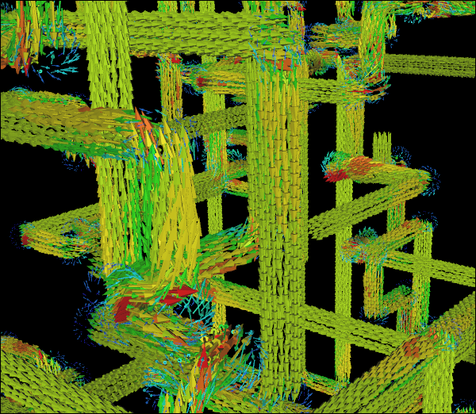

9 CFD Simulations
Every year we perform a diverse selection of Computational Fluid Dyamics (CFD) simulations. Did you miss any last year? Just in case you did here is the complete set from 2015.
Just For Fun CFD Simulation of Multiple Pipe NetworksVelocity Vectors
1. Reduced Complexity 3D Models for CFD
Reduced complexity 3D model for CFD is a great way to avoid getting bogged down in details that are not relevant for a simulation. 3D video games and 3D animation applications have been using reduced complexity 3D models combined with texture maps to present rich visuals since the dawn of the digital age. These models and the concepts to build them can be extremely useful for CFD. Read more >>
2. CFD Simulation of Airflow Through Filters in a Dust Collector
After using CFD to simulate the blower and cyclone in Matthias Wandel's "Small Dust Collector" we next turn our attention to the last remaining major component - the twin filter assembly. The filters remove fine particles that escape the cyclone, leaving the air to pass through the blower and exit to the atmosphere. Read more >>
3. CFD Analysis of a Homemade Cyclone
Hot on the heels of my recent CFD analysis of the blower for Matthias Wandel's "Small Dust Collector" comes a new CFD study of his cyclone. Cyclones are used in many industries to separate fluids from particles. In Matthias' case he wanted to separate sawdust and wood shavings from air collected from the working area of various woodworking machines. Read more >>
4. CFD Analysis of a Blower for a Small Dust Collector
I recently came across an interesting fluid dynamics project modestly titled "Small Dust Collector" by Matthias Wandel of Woodgears. The unusual twist - at least from my metal-orientated view of the world - was the use of wood as the primary construction material. The project includes the construction of a blower, cyclone, filter housing, and filter manifold - all prime candidates for CFD simulations. I sense a series of blog posts, so first let's take a look at the blower also known as a centrifugal fan or squirrel cage fan. Read more >>
5. CFD For A Complete Dust Collector
Having performed CFD simulations for each component of Matthias Wandel's "Small Dust Collector," the time has come to assemble and test the entire system - virtually, of course. Recall that the main components of the dust collector are a cyclone, a filter assembly, and a blower. Read more >>
6. Pipe Fun With CFD
After replicating the classic pipes screensaver in Caedium for fun, the next obvious step was to run CFD simulations for each pipe network to ramp up the fun even higher. Read more >>
7. Spinning Paper Sheet Meets CFD
I don’t think anyone would argue with the fact that paper airplanes are simple (and fun!), but what is the simplest paper airplane that can still fly? I give you a single rectangular piece of paper without any folds that will gently spin around its longest horizontal axis if released with a long edge parallel to the ground. Next, what is the simplest CFD method that can capture the essence of the spinning paper? I give you the Moving Reference Frame (MRF, also known as the frozen rotor method) option for CFD. Combine the two and you arrive at an interesting simulation of a simple phenomenon. Read more >>
8. Walkalong Tumblewing Meets CFD
To complete this series of CFD on simple rotating paper wings, we now turn our attention to the walkalong tumblewing. Read more >>
9. Tumblewing Meets CFD
Although a sheet of paper can be made to fly by spinning, it isn't always reliable. By adding winglets and flaps with 4 simple folds we can improve the stability of the wing and in so doing produce a tumblewing. How do the aerodynamics of a tumblewing compare with a sheet of paper? It just so happens CFD can help, just as it did with the simulation of the spinning sheet of paper. Read more >>
Feedback
Questions? Ideas? Problems?

Recent blog posts
- CFD Simulates Distant Past
- Background on the Caedium v6.0 Release
- Long-Necked Dinosaurs Succumb To CFD
- CFD Provides Insight Into Mystery Fossils
- Wind Turbine Design According to Insects
- Runners Discover Drafting
- Wind Tunnel and CFD Reveal Best Cycling Tuck
- Active Aerodynamics on the Lamborghini Huracán Performante
- Fluidic Logic
- Stonehenge Vortex Revealed as April Fools' Day Distortion Field
 Get our Blog feed
Get our Blog feed